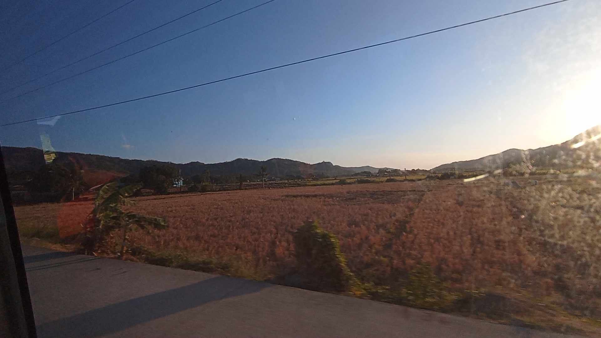
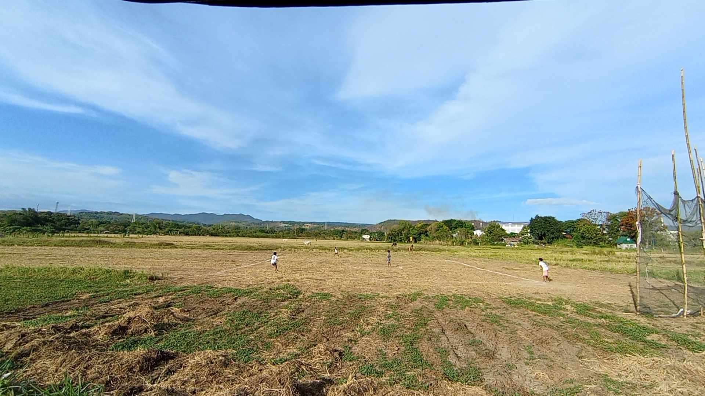
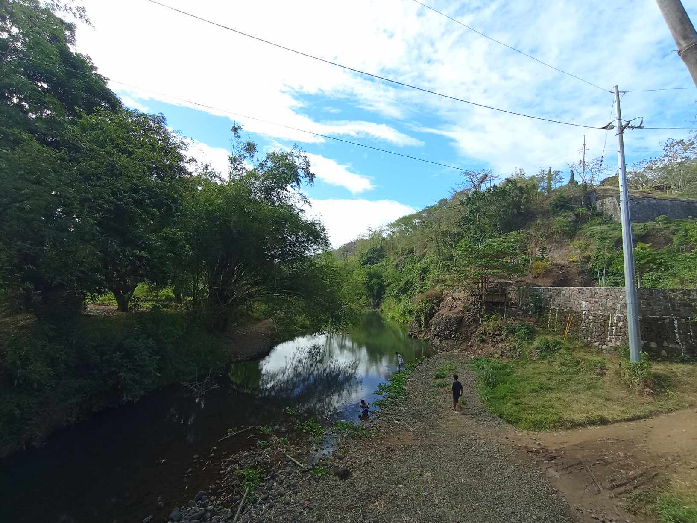
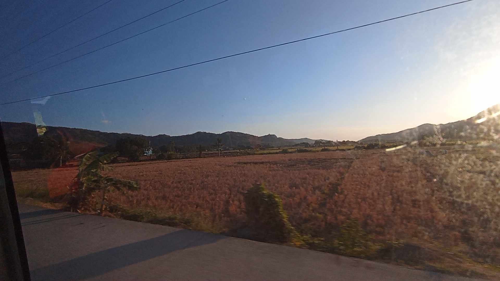
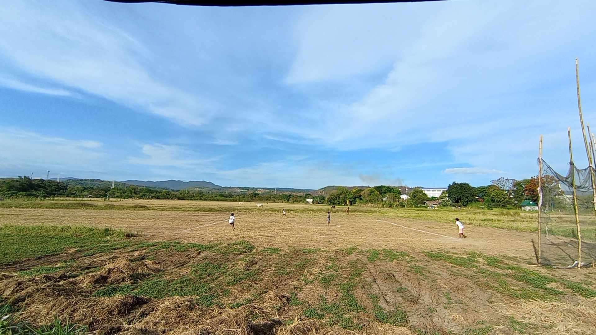
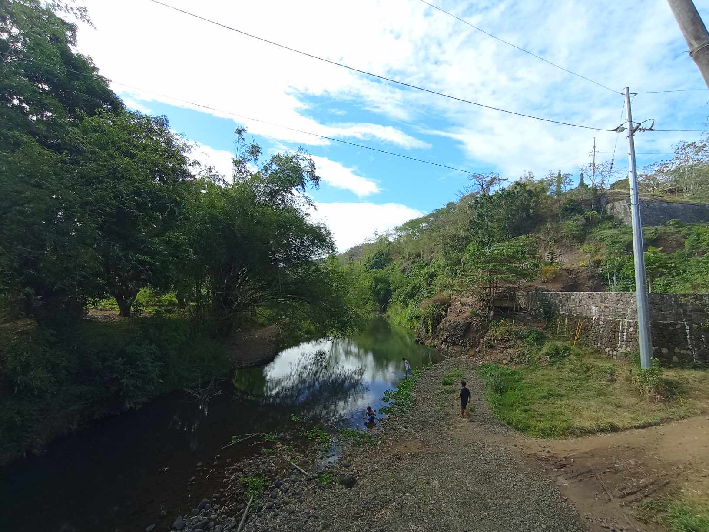

Tanay,Rizal
Nestled at the eastern edge of the bustling Manila metropolis, Tanay in Rizal province stands as a tranquil retreat, offering a perfect escape for nature enthusiasts and adventure seekers alike. Whether you seek adventure or serenity, Tanay in Rizal welcomes you with open arms, offering a diverse tapestry of natural wonders just a stone's throw away from the city. Escape to this haven and let the beauty of Tanay captivate your soul.
- The distance from Manila to Tanay, Rizal, is approximately 54 kilometers (about 33 miles) eastward. The travel time can vary depending on traffic conditions, but typically it takes around 2 to 3 hours by car or public transportation. There are several routes you can take, including passing through Ortigas Avenue Extension or Marcos Highway. Additionally, there are buses and vans available that provide transportation from Manila to Tanay, offering a convenient option for travelers.
 






How to Get to:
The travel time from Manila to Tanay, Rizal can vary depending on the specific starting point in Manila and the mode of transportation. Generally, if you're traveling by car or private vehicle, the journey takes around 1.5 to 3 hours, depending on traffic conditions and the exact location you're departing from in Manila.